EWG’s Guide to Healthy Cleaning
TIPS FOR GREENER CLEANING
www.ewg.org/guides/cleanersMany manufacturers of household cleaners do not disclose all ingredients on product labels, making it virtually impossible for consumers to choose safer products. That’s why EWG developed the Guide to Healthy Cleaning. It rates cleaning products on ingredient hazards as well as disclosure.
Find better products here
www.ewg.org/guides/cleanersAvoid These Three Cleaning Products
ANTIBACTERIAL CLEANERS
- No added protection against illness; contain pesticides.
- Try ordinary cleaners free of antibacterial pesticides.
AIR FRESHENERS
- Can contain dozens of undisclosed and often untested chemicals.
- Open windows, use fans and try baking soda instead.
DRAIN CLEANERS
- Contain extremely toxic chemicals. Use a drain snake or make fizzy drain opener with 1/2 cup vinegar and 1/2 cup baking soda.
What the label doesn’t tell us
It would be easier if all ingredients were listed on the label. But they’re not. Check for warnings and ingredients, not marketing claims.
Skip products containing
Ammonia, 2-butoxyethanol, chlorine bleach, ethanolamines, “Active ingredients” such as ADBAC, benzalkonium chloride, ingredients with names including “-monium chloride” or triclosan